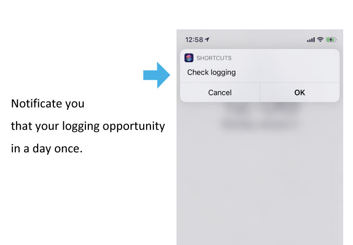
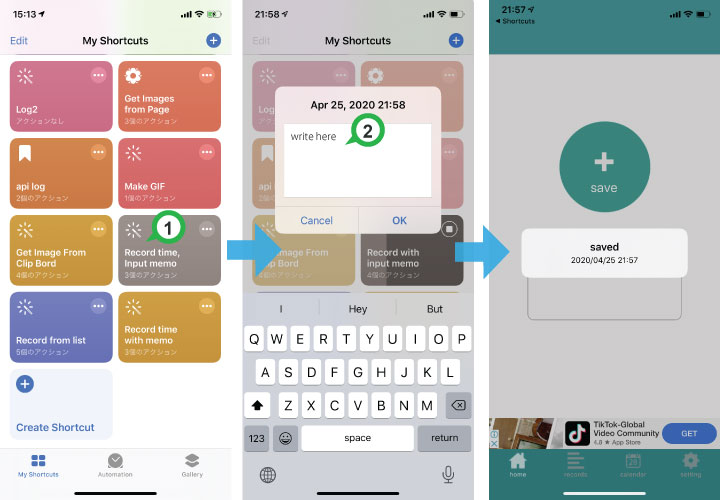

Shortcuts App Tips
Combine the app with the iPhone Shortcuts app to record even faster. Tap "How to set up" on any item to open the step-by-step page.
Select an item from your custom list to record it instantly

You can create a list of entries you frequently record and simply pick one from the widget or shortcut.
This saves you time because you don’t have to type a memo every time you log something.
Reminder NotificationsRecommended

You can set a daily reminder at a specific time to help you check whether you forgot to record anything.
This is especially useful if you often forget to log, or if you're trying to make logging a habit.
The setup is a bit long, but once you set it up, it becomes very convenient.
Save Using a Registered Memo

With this shortcut, you can save a log by just tapping the Shortcut button — no typing required.
You can also edit preset memo texts and place the shortcut on your Home Screen for easy access.
Enter a Memo and Save Without Opening the App

This shortcut saves logs in the same way as saving from the main app.
If you want to record a memo that isn’t already registered, you can enter text directly without switching screens — making logging smoother.
Record from Apple Watch

You can log a record right from your Apple Watch without taking out your iPhone.
The record keeps the time you logged it on the watch, and you can import all records on your iPhone later.
Just tap an item from your list to record (free memos by voice or handwriting are also supported).
Save Location
This shortcut records your current location by automatically saving the address and a Google Maps URL.
Perfect for logging where you were at a specific time.
Record notes with voice input
Voice input is faster than typing a sentence yourself.